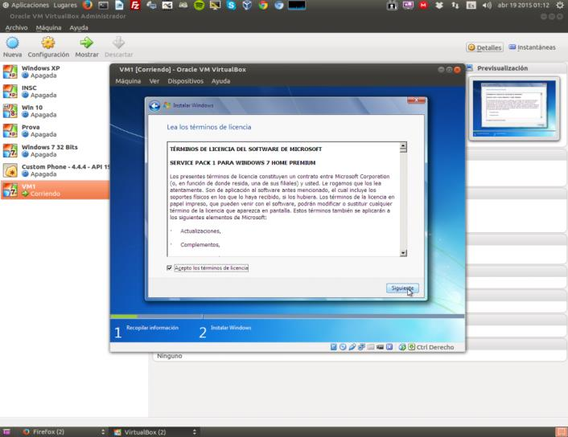

Instalación de un sistema operativo en una máquina virtual
Instalación de un sistema operativo en una maquina virtual
1. Abrimos el programa Virtualbox.
2. Con el programa Virtualbox abierto seleccionamos nuestra máquina virtual y hacemos clic en “Configuración”.
3. Nos dirigimos a la opción “Almacenamiento” y hacemos clic en el Icono del CD (En mi caso pone “Vacío”).
4. Una vez seleccionado desplegamos el menú del icono del CD de la parte derecha de la pantalla.
5. Escogemos la opción “Seleccionar un archivo de disco virtual” y buscamos el archivo ISO que contiene el DVD de instalación del sistema operativo virtual (En este caso Windows 7). Aquí cada uno ha de buscar como encontrarlo, si tenéis un DVD original lo podéis pasar a archivo ISO con algún programa.
6. Hacemos clic en aceptar y encendemos la máquina virtual haciendo doble clic sobre ella.
7. Se iniciará la máquina virtual y la correspondiente instalación del sistema operativo virtual.
8. Seleccionamos el idioma y adelante.
9. Clic en “Instalar ahora”.

10. Aceptamos la licencia y “Siguiente”.
11. Seleccionamos el tipo de instalación que deseemos, en este caso escogeremos la personalizada porque nos interesa una instalación limpia.
12. Aquí tenemos las herramientas para particionar el disco y seleccionar la partición donde queramos instalar el sistema operativo virtual. Como queremos usar todo el disco haremos clic directamente en “Siguiente”.
13. Aquí empezará la copia de archivos y la instalación del sistema operativo virtual.
14. Pasados unos minutos nos preguntará el nombre del equipo y el del usuario principal.
15. Aquí hay que ingresar la contraseña del usuario principal. En este caso, al ser una máquina de prueba, no le pondremos contraseña y darmos clic a “Siguiente”.
16. Al ser una máquina de prueba no le pondremos clave de licencia. Hacemos clic en “Omitir” si no queremos introducir ahora la clave de licencia (Se puede hacer posteriormente):
17. En esta opción hay que escoger la configuración de Windows Update.
18. Comprobamos fecha y zona horaria y adelante.
19. Aquí seleccionamos el tipo de red. Si es una red pública como un aeropuerto, cafetería o biblioteca seleccionamos red pública por seguridad. Si es una red privada podemos elegir la primera opción.
20. Finalizará la instalación.
21. Ya podemos disfrutar de nuestro nuevo sistema operativo virtual Windows 7.